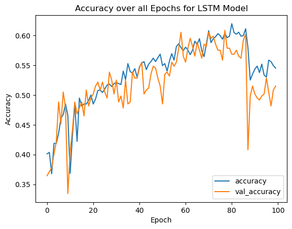
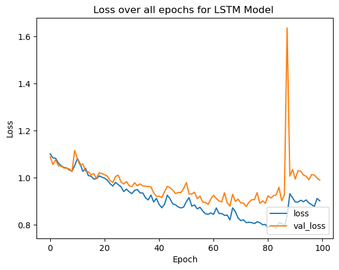

CSCI 5922: Neural Networks Exam3 (Final Exam) - Fall 2023
Author
Jasmine Kobayashi
Part 3: Applying Neural Nets (ANN, CNN, LSTM) to real labeled text data
For this part of the Exam, I have gathered articles on three topics: football, science, and politics. The data has already been cleaned, tokenized, and vectorized. Each row (vector) in the dataset is an article, each row is labeled as football, science, and politics. Each column is a word in the vocabulary. The data itself represents the number of times each word appear in that given article. (The data was gathered from newsapi.org).
Here is a link to the cleaned, prepared, labeled data.
Coding, comparing, and using an ANN, CNN, and LSTM RNN in TF/Keras (Python) to Train models and to Test their accuracy.
You want to see if you can predict the topic of an article (in this case - football, science, and politics).
You also want to compare and illustrate the accuracy of your models and determine/discuss which model (ANN, CNN, or LSTM) is best and why this might be.
It is up to you how to do this and how best to illustrate and explain your steps, results, and conclusions. Assume the reader is non-technical.
You will include a link to your code, but do not paste or otherwise include code on the Exam document. (Again, you can place your code wherever you want as long as there is a link to it).
Specific requirements:
There are many ways to do this. The following offeres a few core requirements. Beyond this, YOU must decide what to do and how best to do it. Part of your grade will be based on your flow, discussion, illustrations, report, and communication of methods and results. Again, you will post a link to the code, but you will not include or paste code in the word doc.
Use Python and TF/Keras to Train and then Test the accuracy for an ANN, CNN, and LSTM RNN. In other words, you will use three different Neural Networks to create models that should predict whether a test vector (which represents an article on a topic) is on the topic of science, football, or politics. You will need to write code to do this. You already have code for ANNs, CNNs, and LSTM RNNs, so you may choose to repurpose/update your code as needed.
To show your work and to illustrate and explain your work, results, and conclusions you must include at least the following:
A link to your code. If you wish, you can put your code on your website, Google Colab, GitHub or wherever, an the include the URL on the word doc.
Show and explain how you prepared the data so that you can use it properly to Train and Test your models. (You are not required to validate - but you certainly can). Specifically, if you split the data, discuss and illustrate this. If you encode the labels, discuss and illustrate this, etc. Use images (like screenshots) as needed. YOU decide and explain/show what you are doing.
DO NOT include or paste any code (to Word doc). You do not need nor should you use “code” to explain or illustrate what you are doing. Use illustrations, images, explanations. Pretend that the person grading this paper does not know Python but does wan to see and understand what you did, what you found, how your models compare, which model worked best, etc.
TO be clear - You will be coding, training, and then testing three types of models: ANN, CNN, LSTM. Therefore, you should include screen images (small portions) of the training for each (a few of the last epochs), as well as confusion matrices for each that illustrate the test data accuracy for each model.
Discuss and describe what you are doing and showing.
Discuss and illustrate the results. Which model worked best (have confusion matrices that support this discussion). Comment on which model you expected to work the best, which model actually worked the best and why.
# %% librariesimport numpy as npimport pandas as pdimport matplotlib.pyplot as pltimport seaborn as snsimport os,sysfrom sklearn.model_selection import train_test_splitfrom sklearn.preprocessing import OneHotEncoderfrom sklearn.metrics import confusion_matriximport tensorflow as tffrom tensorflow import kerasfrom tensorflow.keras import layersimport tensorflow.kerasfrom tensorflow.keras.models import Sequentialfrom tensorflow.keras.layers import LSTM, Dense, Dropout, LSTMfrom tensorflow.keras.optimizers import Adamfrom tensorflow.keras import layers
2023-12-09 08:28:12.733515: I tensorflow/core/util/port.cc:110] oneDNN custom operations are on. You may see slightly different numerical results due to floating-point round-off errors from different computation orders. To turn them off, set the environment variable `TF_ENABLE_ONEDNN_OPTS=0`.
2023-12-09 08:28:12.783324: I tensorflow/core/platform/cpu_feature_guard.cc:182] This TensorFlow binary is optimized to use available CPU instructions in performance-critical operations.
To enable the following instructions: SSE4.1 SSE4.2 AVX AVX2 AVX512F AVX512_VNNI FMA, in other operations, rebuild TensorFlow with the appropriate compiler flags.
# %% working directoryprint("current working directory:", os.getcwd())if os.getcwd()[-15:] !="/CSCI5922/Exam3": src_file_dir = os.path.abspath("") # directory holding this script file src_dir = os.path.dirname(src_file_dir) # parent directory of above directory os.chdir(src_dir) # working directory should now be ".../CSCI5922/Exam3"print("current working directory:", os.getcwd())
current working directory: /home/jasminekobayashi/gh_repos/CSCI5922/Exam3/notebook
current working directory: /home/jasminekobayashi/gh_repos/CSCI5922/Exam3
# %% Training & Testing settest_size =0.2# what percent of the data = testing set X_train,X_test,y_train,y_test = train_test_split(X,y,test_size=test_size,random_state=123)
There are some portions of the code that could be relatively repetitive, so rather than just constantly copy and pasting cell codes, I created the following class to help with some redundancy.
The class is built so that after building the model, the desired model to be evaluated is passed into the class when instantiated (and the model summary is outputted during instantiation).
It contains functions that simplify some repetitive process with parameters to change the small details to give flexibility to change if needed depending on the model. Some function may default to have some useful informative outputs (like what loss function was used, data previews, etc.).
class exam_model_eval:def__init__(self,NN_model, model_name ='NN Model', X_train=X_train, X_test=X_test, y_train=y_train, y_test=y_test, OHE=OHE):self.NN_model = NN_modelself.model_name = model_nameself.OHE = OHEself.X_train = X_trainself.X_test = X_testself.y_train = y_trainself.labeled_y_train =self.OHE.inverse_transform(self.y_train) #likely not needed, but potentially usefulself.y_test = y_testself.labeled_y_test =self.OHE.inverse_transform(self.y_test)# print model summaryprint(self.NN_model.summary())def compile_model(self, loss = tf.keras.losses.CategoricalCrossentropy(), metrics = keras.metrics.CategoricalAccuracy(), optimizer = tf.keras.optimizers.legacy.Adam(learning_rate =0.001)):self.NN_model.compile(loss=loss, metrics = metrics, optimizer = optimizer)print("Model was compiled (using following parameters):")print("Loss Function =",str(loss))print("Accuracy Metric =",str(metrics))print("Optimizer =",str(optimizer))def train_model(self,epochs =10):self.hist =self.NN_model.fit(self.X_train,self.y_train, epochs = epochs, validation_data =(self.X_test,self.y_test))def accuracy_plot(self, title ="Accuracy over all Epochs"):# Accuracy plot plt.plot(self.hist.history['categorical_accuracy'], label='accuracy') plt.plot(self.hist.history['val_categorical_accuracy'], label ='val_accuracy') plt.xlabel('Epoch') plt.ylabel('Accuracy') plt.title(title+" for {}".format(self.model_name))#plt.ylim([0.5, 1]) plt.legend(loc='lower right') plt.show()def loss_plot(self, title ="Loss over all epochs"):# Loss plot plt.plot(self.hist.history['loss'], label='loss') plt.plot(self.hist.history['val_loss'], label ='val_loss') plt.xlabel('Epoch') plt.ylabel('Loss') plt.title(title+" for {} ".format(self.model_name))#plt.ylim([0.5, 1]) plt.legend(loc='lower right')def test_model(self,verbose=True):self.prediction =self.NN_model.predict(self.X_test)self.labeled_prediction =self.OHE.inverse_transform(self.prediction)self.eval_loss,self.eval_acc =self.NN_model.evaluate(self.X_test,self.y_test)if verbose:print("\nModel Loss from testing:")print(self.eval_loss)print("\nModel Accuracy from testing:")print(self.eval_acc)print("\nPreview of model prediction (raw):")print(self.prediction[:5])print("\nPreview of predictions labeled:")print(self.labeled_prediction[:5])def pretty_confusion_matrix(self, title='Confusion Matrix'): cm = confusion_matrix(self.labeled_prediction,self.labeled_y_test) fig, ax = plt.subplots() sns.heatmap(cm, annot=True, fmt='g', ax=ax, annot_kws={'size': 18}) ax.set_xlabel('True labels') ax.set_ylabel('Predicted labels') ax.xaxis.set_ticklabels(self.OHE.categories_[0].tolist()) ax.yaxis.set_ticklabels(self.OHE.categories_[0].tolist()) ax.set_title(title+" of {} Prediction Performance".format(self.model_name)) plt.show()
2023-12-09 08:28:15.351229: E tensorflow/compiler/xla/stream_executor/cuda/cuda_driver.cc:266] failed call to cuInit: UNKNOWN ERROR (100)
Model was compiled (using following parameters):
Loss Function = <keras.losses.CategoricalCrossentropy object at 0x7f5ef098e010>
Accuracy Metric = CategoricalAccuracy(name=categorical_accuracy,dtype=float32)
Optimizer = <keras.optimizers.legacy.adam.Adam object at 0x7f5ef0965110>
Model was compiled (using following parameters):
Loss Function = <keras.losses.CategoricalCrossentropy object at 0x7f5ef098e010>
Accuracy Metric = CategoricalAccuracy(name=categorical_accuracy,dtype=float32)
Optimizer = <keras.optimizers.legacy.adam.Adam object at 0x7f5ef0965110>
2023-12-09 08:29:49.815851: I tensorflow/core/common_runtime/executor.cc:1197] [/device:CPU:0] (DEBUG INFO) Executor start aborting (this does not indicate an error and you can ignore this message): INVALID_ARGUMENT: You must feed a value for placeholder tensor 'gradients/split_2_grad/concat/split_2/split_dim' with dtype int32
[[{{node gradients/split_2_grad/concat/split_2/split_dim}}]]
2023-12-09 08:29:49.818660: I tensorflow/core/common_runtime/executor.cc:1197] [/device:CPU:0] (DEBUG INFO) Executor start aborting (this does not indicate an error and you can ignore this message): INVALID_ARGUMENT: You must feed a value for placeholder tensor 'gradients/split_grad/concat/split/split_dim' with dtype int32
[[{{node gradients/split_grad/concat/split/split_dim}}]]
2023-12-09 08:29:49.822827: I tensorflow/core/common_runtime/executor.cc:1197] [/device:CPU:0] (DEBUG INFO) Executor start aborting (this does not indicate an error and you can ignore this message): INVALID_ARGUMENT: You must feed a value for placeholder tensor 'gradients/split_1_grad/concat/split_1/split_dim' with dtype int32
[[{{node gradients/split_1_grad/concat/split_1/split_dim}}]]
2023-12-09 08:29:50.105473: I tensorflow/core/common_runtime/executor.cc:1197] [/device:CPU:0] (DEBUG INFO) Executor start aborting (this does not indicate an error and you can ignore this message): INVALID_ARGUMENT: You must feed a value for placeholder tensor 'gradients/ReverseV2_grad/ReverseV2/ReverseV2/axis' with dtype int32 and shape [1]
[[{{node gradients/ReverseV2_grad/ReverseV2/ReverseV2/axis}}]]
2023-12-09 08:29:50.194940: I tensorflow/core/common_runtime/executor.cc:1197] [/device:CPU:0] (DEBUG INFO) Executor start aborting (this does not indicate an error and you can ignore this message): INVALID_ARGUMENT: You must feed a value for placeholder tensor 'gradients/split_2_grad/concat/split_2/split_dim' with dtype int32
[[{{node gradients/split_2_grad/concat/split_2/split_dim}}]]
2023-12-09 08:29:50.198242: I tensorflow/core/common_runtime/executor.cc:1197] [/device:CPU:0] (DEBUG INFO) Executor start aborting (this does not indicate an error and you can ignore this message): INVALID_ARGUMENT: You must feed a value for placeholder tensor 'gradients/split_grad/concat/split/split_dim' with dtype int32
[[{{node gradients/split_grad/concat/split/split_dim}}]]
2023-12-09 08:29:50.200926: I tensorflow/core/common_runtime/executor.cc:1197] [/device:CPU:0] (DEBUG INFO) Executor start aborting (this does not indicate an error and you can ignore this message): INVALID_ARGUMENT: You must feed a value for placeholder tensor 'gradients/split_1_grad/concat/split_1/split_dim' with dtype int32
[[{{node gradients/split_1_grad/concat/split_1/split_dim}}]]
Model was compiled (using following parameters):
Loss Function = <keras.losses.CategoricalCrossentropy object at 0x7f5ef098e010>
Accuracy Metric = CategoricalAccuracy(name=categorical_accuracy,dtype=float32)
Optimizer = <keras.optimizers.legacy.adam.Adam object at 0x7f5ef0965110>
2023-12-09 08:29:50.854903: I tensorflow/core/common_runtime/executor.cc:1197] [/device:CPU:0] (DEBUG INFO) Executor start aborting (this does not indicate an error and you can ignore this message): INVALID_ARGUMENT: You must feed a value for placeholder tensor 'gradients/split_2_grad/concat/split_2/split_dim' with dtype int32
[[{{node gradients/split_2_grad/concat/split_2/split_dim}}]]
2023-12-09 08:29:50.859828: I tensorflow/core/common_runtime/executor.cc:1197] [/device:CPU:0] (DEBUG INFO) Executor start aborting (this does not indicate an error and you can ignore this message): INVALID_ARGUMENT: You must feed a value for placeholder tensor 'gradients/split_grad/concat/split/split_dim' with dtype int32
[[{{node gradients/split_grad/concat/split/split_dim}}]]
2023-12-09 08:29:50.862129: I tensorflow/core/common_runtime/executor.cc:1197] [/device:CPU:0] (DEBUG INFO) Executor start aborting (this does not indicate an error and you can ignore this message): INVALID_ARGUMENT: You must feed a value for placeholder tensor 'gradients/split_1_grad/concat/split_1/split_dim' with dtype int32
[[{{node gradients/split_1_grad/concat/split_1/split_dim}}]]
2023-12-09 08:29:51.115414: I tensorflow/core/common_runtime/executor.cc:1197] [/device:CPU:0] (DEBUG INFO) Executor start aborting (this does not indicate an error and you can ignore this message): INVALID_ARGUMENT: You must feed a value for placeholder tensor 'gradients/ReverseV2_grad/ReverseV2/ReverseV2/axis' with dtype int32 and shape [1]
[[{{node gradients/ReverseV2_grad/ReverseV2/ReverseV2/axis}}]]
2023-12-09 08:29:51.273509: I tensorflow/core/common_runtime/executor.cc:1197] [/device:CPU:0] (DEBUG INFO) Executor start aborting (this does not indicate an error and you can ignore this message): INVALID_ARGUMENT: You must feed a value for placeholder tensor 'gradients/split_2_grad/concat/split_2/split_dim' with dtype int32
[[{{node gradients/split_2_grad/concat/split_2/split_dim}}]]
2023-12-09 08:29:51.277900: I tensorflow/core/common_runtime/executor.cc:1197] [/device:CPU:0] (DEBUG INFO) Executor start aborting (this does not indicate an error and you can ignore this message): INVALID_ARGUMENT: You must feed a value for placeholder tensor 'gradients/split_grad/concat/split/split_dim' with dtype int32
[[{{node gradients/split_grad/concat/split/split_dim}}]]
2023-12-09 08:29:51.281980: I tensorflow/core/common_runtime/executor.cc:1197] [/device:CPU:0] (DEBUG INFO) Executor start aborting (this does not indicate an error and you can ignore this message): INVALID_ARGUMENT: You must feed a value for placeholder tensor 'gradients/split_1_grad/concat/split_1/split_dim' with dtype int32
[[{{node gradients/split_1_grad/concat/split_1/split_dim}}]]
2023-12-09 08:29:52.196934: I tensorflow/core/common_runtime/executor.cc:1197] [/device:CPU:0] (DEBUG INFO) Executor start aborting (this does not indicate an error and you can ignore this message): INVALID_ARGUMENT: You must feed a value for placeholder tensor 'gradients/ReverseV2_grad/ReverseV2/ReverseV2/axis' with dtype int32 and shape [1]
[[{{node gradients/ReverseV2_grad/ReverseV2/ReverseV2/axis}}]]
2023-12-09 08:29:52.902274: I tensorflow/core/common_runtime/executor.cc:1197] [/device:CPU:0] (DEBUG INFO) Executor start aborting (this does not indicate an error and you can ignore this message): INVALID_ARGUMENT: You must feed a value for placeholder tensor 'gradients/split_2_grad/concat/split_2/split_dim' with dtype int32
[[{{node gradients/split_2_grad/concat/split_2/split_dim}}]]
2023-12-09 08:29:52.909102: I tensorflow/core/common_runtime/executor.cc:1197] [/device:CPU:0] (DEBUG INFO) Executor start aborting (this does not indicate an error and you can ignore this message): INVALID_ARGUMENT: You must feed a value for placeholder tensor 'gradients/split_grad/concat/split/split_dim' with dtype int32
[[{{node gradients/split_grad/concat/split/split_dim}}]]
2023-12-09 08:29:52.913336: I tensorflow/core/common_runtime/executor.cc:1197] [/device:CPU:0] (DEBUG INFO) Executor start aborting (this does not indicate an error and you can ignore this message): INVALID_ARGUMENT: You must feed a value for placeholder tensor 'gradients/split_1_grad/concat/split_1/split_dim' with dtype int32
[[{{node gradients/split_1_grad/concat/split_1/split_dim}}]]
2023-12-09 08:29:53.262246: I tensorflow/core/common_runtime/executor.cc:1197] [/device:CPU:0] (DEBUG INFO) Executor start aborting (this does not indicate an error and you can ignore this message): INVALID_ARGUMENT: You must feed a value for placeholder tensor 'gradients/ReverseV2_grad/ReverseV2/ReverseV2/axis' with dtype int32 and shape [1]
[[{{node gradients/ReverseV2_grad/ReverseV2/ReverseV2/axis}}]]
2023-12-09 08:29:53.440306: I tensorflow/core/common_runtime/executor.cc:1197] [/device:CPU:0] (DEBUG INFO) Executor start aborting (this does not indicate an error and you can ignore this message): INVALID_ARGUMENT: You must feed a value for placeholder tensor 'gradients/split_2_grad/concat/split_2/split_dim' with dtype int32
[[{{node gradients/split_2_grad/concat/split_2/split_dim}}]]
2023-12-09 08:29:53.446167: I tensorflow/core/common_runtime/executor.cc:1197] [/device:CPU:0] (DEBUG INFO) Executor start aborting (this does not indicate an error and you can ignore this message): INVALID_ARGUMENT: You must feed a value for placeholder tensor 'gradients/split_grad/concat/split/split_dim' with dtype int32
[[{{node gradients/split_grad/concat/split/split_dim}}]]
2023-12-09 08:29:53.451913: I tensorflow/core/common_runtime/executor.cc:1197] [/device:CPU:0] (DEBUG INFO) Executor start aborting (this does not indicate an error and you can ignore this message): INVALID_ARGUMENT: You must feed a value for placeholder tensor 'gradients/split_1_grad/concat/split_1/split_dim' with dtype int32
[[{{node gradients/split_1_grad/concat/split_1/split_dim}}]]
2023-12-09 08:29:54.599477: I tensorflow/core/common_runtime/executor.cc:1197] [/device:CPU:0] (DEBUG INFO) Executor start aborting (this does not indicate an error and you can ignore this message): INVALID_ARGUMENT: You must feed a value for placeholder tensor 'gradients/ReverseV2_grad/ReverseV2/ReverseV2/axis' with dtype int32 and shape [1]
[[{{node gradients/ReverseV2_grad/ReverseV2/ReverseV2/axis}}]]
2023-12-09 08:30:02.900282: I tensorflow/core/common_runtime/executor.cc:1197] [/device:CPU:0] (DEBUG INFO) Executor start aborting (this does not indicate an error and you can ignore this message): INVALID_ARGUMENT: You must feed a value for placeholder tensor 'gradients/split_2_grad/concat/split_2/split_dim' with dtype int32
[[{{node gradients/split_2_grad/concat/split_2/split_dim}}]]
2023-12-09 08:30:02.904083: I tensorflow/core/common_runtime/executor.cc:1197] [/device:CPU:0] (DEBUG INFO) Executor start aborting (this does not indicate an error and you can ignore this message): INVALID_ARGUMENT: You must feed a value for placeholder tensor 'gradients/split_grad/concat/split/split_dim' with dtype int32
[[{{node gradients/split_grad/concat/split/split_dim}}]]
2023-12-09 08:30:02.907014: I tensorflow/core/common_runtime/executor.cc:1197] [/device:CPU:0] (DEBUG INFO) Executor start aborting (this does not indicate an error and you can ignore this message): INVALID_ARGUMENT: You must feed a value for placeholder tensor 'gradients/split_1_grad/concat/split_1/split_dim' with dtype int32
[[{{node gradients/split_1_grad/concat/split_1/split_dim}}]]
2023-12-09 08:30:03.113554: I tensorflow/core/common_runtime/executor.cc:1197] [/device:CPU:0] (DEBUG INFO) Executor start aborting (this does not indicate an error and you can ignore this message): INVALID_ARGUMENT: You must feed a value for placeholder tensor 'gradients/ReverseV2_grad/ReverseV2/ReverseV2/axis' with dtype int32 and shape [1]
[[{{node gradients/ReverseV2_grad/ReverseV2/ReverseV2/axis}}]]
2023-12-09 08:30:03.211651: I tensorflow/core/common_runtime/executor.cc:1197] [/device:CPU:0] (DEBUG INFO) Executor start aborting (this does not indicate an error and you can ignore this message): INVALID_ARGUMENT: You must feed a value for placeholder tensor 'gradients/split_2_grad/concat/split_2/split_dim' with dtype int32
[[{{node gradients/split_2_grad/concat/split_2/split_dim}}]]
2023-12-09 08:30:03.213592: I tensorflow/core/common_runtime/executor.cc:1197] [/device:CPU:0] (DEBUG INFO) Executor start aborting (this does not indicate an error and you can ignore this message): INVALID_ARGUMENT: You must feed a value for placeholder tensor 'gradients/split_grad/concat/split/split_dim' with dtype int32
[[{{node gradients/split_grad/concat/split/split_dim}}]]
2023-12-09 08:30:03.215389: I tensorflow/core/common_runtime/executor.cc:1197] [/device:CPU:0] (DEBUG INFO) Executor start aborting (this does not indicate an error and you can ignore this message): INVALID_ARGUMENT: You must feed a value for placeholder tensor 'gradients/split_1_grad/concat/split_1/split_dim' with dtype int32
[[{{node gradients/split_1_grad/concat/split_1/split_dim}}]]
my_LSTM.accuracy_plot()my_LSTM.loss_plot()


my_LSTM.test_model(verbose=True)
2023-12-09 08:44:20.510807: I tensorflow/core/common_runtime/executor.cc:1197] [/device:CPU:0] (DEBUG INFO) Executor start aborting (this does not indicate an error and you can ignore this message): INVALID_ARGUMENT: You must feed a value for placeholder tensor 'gradients/split_2_grad/concat/split_2/split_dim' with dtype int32
[[{{node gradients/split_2_grad/concat/split_2/split_dim}}]]
2023-12-09 08:44:20.519733: I tensorflow/core/common_runtime/executor.cc:1197] [/device:CPU:0] (DEBUG INFO) Executor start aborting (this does not indicate an error and you can ignore this message): INVALID_ARGUMENT: You must feed a value for placeholder tensor 'gradients/split_grad/concat/split/split_dim' with dtype int32
[[{{node gradients/split_grad/concat/split/split_dim}}]]
2023-12-09 08:44:20.524959: I tensorflow/core/common_runtime/executor.cc:1197] [/device:CPU:0] (DEBUG INFO) Executor start aborting (this does not indicate an error and you can ignore this message): INVALID_ARGUMENT: You must feed a value for placeholder tensor 'gradients/split_1_grad/concat/split_1/split_dim' with dtype int32
[[{{node gradients/split_1_grad/concat/split_1/split_dim}}]]
2023-12-09 08:44:20.881161: I tensorflow/core/common_runtime/executor.cc:1197] [/device:CPU:0] (DEBUG INFO) Executor start aborting (this does not indicate an error and you can ignore this message): INVALID_ARGUMENT: You must feed a value for placeholder tensor 'gradients/ReverseV2_grad/ReverseV2/ReverseV2/axis' with dtype int32 and shape [1]
[[{{node gradients/ReverseV2_grad/ReverseV2/ReverseV2/axis}}]]
2023-12-09 08:44:20.974544: I tensorflow/core/common_runtime/executor.cc:1197] [/device:CPU:0] (DEBUG INFO) Executor start aborting (this does not indicate an error and you can ignore this message): INVALID_ARGUMENT: You must feed a value for placeholder tensor 'gradients/split_2_grad/concat/split_2/split_dim' with dtype int32
[[{{node gradients/split_2_grad/concat/split_2/split_dim}}]]
2023-12-09 08:44:20.978469: I tensorflow/core/common_runtime/executor.cc:1197] [/device:CPU:0] (DEBUG INFO) Executor start aborting (this does not indicate an error and you can ignore this message): INVALID_ARGUMENT: You must feed a value for placeholder tensor 'gradients/split_grad/concat/split/split_dim' with dtype int32
[[{{node gradients/split_grad/concat/split/split_dim}}]]
2023-12-09 08:44:20.983097: I tensorflow/core/common_runtime/executor.cc:1197] [/device:CPU:0] (DEBUG INFO) Executor start aborting (this does not indicate an error and you can ignore this message): INVALID_ARGUMENT: You must feed a value for placeholder tensor 'gradients/split_1_grad/concat/split_1/split_dim' with dtype int32
[[{{node gradients/split_1_grad/concat/split_1/split_dim}}]]
10/10 [==============================] - 2s 70ms/step
10/10 [==============================] - 1s 90ms/step - loss: 0.9898 - categorical_accuracy: 0.5151
Model Loss from testing:
0.9897634387016296
Model Accuracy from testing:
0.5150501728057861
Preview of model prediction (raw):
[[0.25686276 0.58602667 0.15711057]
[0.36523157 0.2252316 0.40953684]
[0.19448712 0.3848234 0.42068952]
[0.03716486 0.32854217 0.63429296]
[0.31666362 0.2699188 0.41341752]]
Preview of predictions labeled:
[['politics']
['science']
['science']
['science']
['science']]